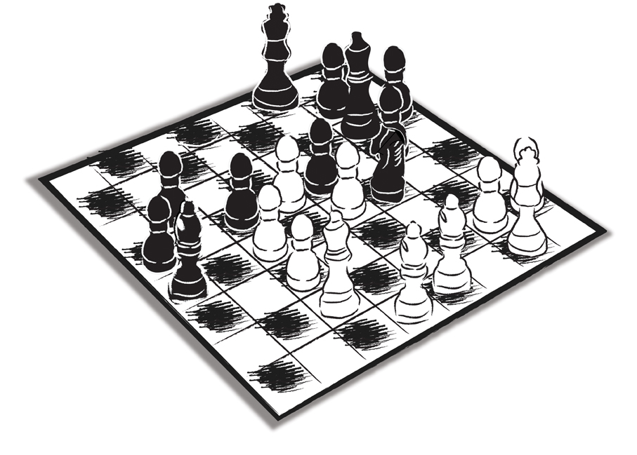

Bu kitabın bütününden çıkarılmasını arzu ettiğim ders şudur:
Eş ve özel müşteriyi kaybetmemek, yani sonunda kendini kaybetmemek için, birbirlerine pek benzeyen bu iki ‘türü’; işin özündeki, galibi ve mağlubu olmaması gereken, zekâ, akıl ve ruha ihtiyaç duyan satranç oyununu usulünce oynamayı ve yönetmeyi bilmeliyiz. ‘Yönetmek’ ise ancak ‘yönetmemekle’ mümkündür...
Yönetmeyi öğrenmek için önce yönetmemeyi öğrenmeyi bilmek gerekir… Bunun için de tek yol vardır: Kendini reddetmek… Kendini üçüncü noktada yeniden üretmek ve tam anlamıyla kabullenmek adına reddetmek…
‘Ret-kabul’ aynı anda nasıl olabiliyor, bunu daha önce tartışmıştık… (Bkz. Birliktelik nereye kadar sürer?)
Benzer bir tartışma yönetmek-yönetmemek ekseninde yürütülemez mi?...
Bu kitabı doğru okurken hayatı da bir miktar olsun ‘okumayı’ ve o anlamda kendimizi yeniden üretmeyi becerirsek, o zaman belki sahip olmadan sahip olmayı, yönetmeden yönetmeyi, ölmeden önce ölmeyi de öğrenebiliriz…
Ekim 2006, Kemerburgaz-Ekim 2010, Bozcaada